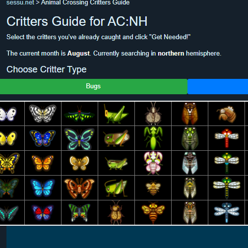
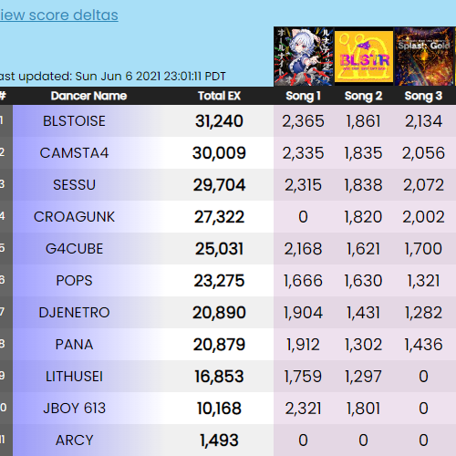
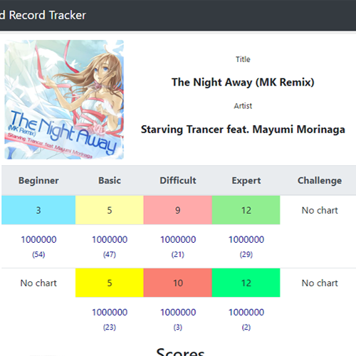

Hey, I'm sessu.
I'm a linguist and a coder.
About me
I'm currently working as a customer support representative for a venture tech company, but my true passion is languages and coding. I'm fluent in Korean and somewhat competent in web design and Java. I've also been studying Japanese for about 3 years, and I think I'm getting pretty good!
I'm also a massive fan of the game Dance Dance Revolution, so if I'm not studying or programming, I'm probably thinking about that. I usually play at home 2 or 3 times a week, and I've even participated in some tournaments. Here's a recent highligh clip I'm particularly fond of:
Besides my current job, I've worked as a flight attendant for Delta Air Lines, an English teacher in South Korea, an interpreter for the military, and a webcomic translator. I've really done so much that it's hard to list out here, so if you'd like some more details, you should check out the links below.
Stuff I've Worked On
| Image | Description |
|---|---|
|  |
Animal Crossing Critters GuideCreated April 2020 My first HTML/CSS and JavaScript project. I wanted something to use while playing Animal Crossing: New Horizons that would tell me which bugs, fish, and shells I could catch (since they changed every month). I developed this with a mobile/touch-friendly layout in mind. |
|  |
The 10th KAC Unofficial DDR RankingsCreated December 2020 In 2020, Konami hosted the qualifiers for the 10th KAC, an annual tournament showcasing the top players of Dance Dance Revolution, along with other games. Overseas players weren't allowed to compete due to COVID-19 restrictions, so I made an unofficial site to let people submit their scores. I periodically scraped a public Google Sheet to generate the table. |

|
Dancerush Score Tracker (Mockup)Created February 2021 (On Hold) I'm a big fan of Konami games (obviously), but I dislike the web UI they use to present information about your scores. It's difficult to navigate, completely in Japanese, and walled-off behind a login page. I sought to make it a little easier to view and access score information. While I completed a working front-end for this project, I planned to create an app component that would update your scores from your phone. I've put this part of the project on hold until I can build a working API and mobile UI. |
|  |
DDR World Record TrackerCreated August 2021 (Ongoing) I was approached by a couple of members of the DDR fandom who were interested in creating a new ranking player ranking system. The system ranks players based on how many world record scores they have on DDR songs. I built a web Java/Maven web scraper that gathered score data, processed it, and created ranking lists to show which players had the most impressive collections of scores. More info can be found at the website. |
More projects to be added soon! For more up-to-date information, check out my Github page.
Want to get in touch?
Reach me using the links below: